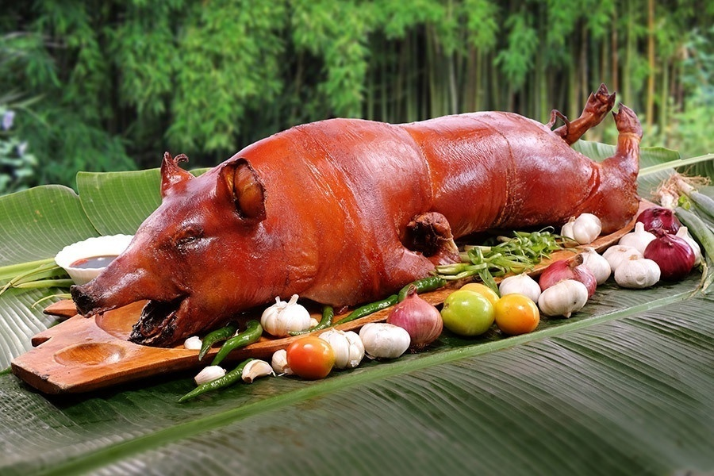

Lechon Recipe

Lechon is a succulent roasted pork with crispy skin, a centerpiece of every Filipino Christmas table. Here's how to make it:
Ingredients:
- 1 whole pig (30-50 pounds)
- 5 cloves garlic, minced
- 1 tablespoon salt
- 1 tablespoon pepper
- 2 stalks lemongrass, crushed
- 4-5 pieces bay leaves
- 1 cup vinegar
- 1/2 cup soy sauce
Instructions:
- Clean the pig thoroughly, removing internal organs and hair.
- Score the skin of the pig with a sharp knife.
- Mix garlic, salt, pepper, lemongrass, bay leaves, vinegar, and soy sauce to create the marinade.
- Rub the marinade all over the pig, including inside the cavity. Let it marinate for at least 6 hours, or overnight for best results.
- Preheat the oven to 350°F (175°C).
- Place the pig on a roasting rack and roast in the preheated oven for 4-6 hours, or until the skin is golden brown and crispy, and the meat is cooked through.
- Remove from the oven and let it rest for 20-30 minutes before serving.
- Serve with your favorite dipping sauce and enjoy!